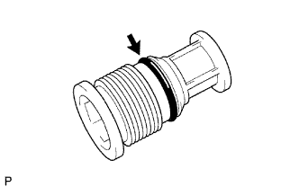
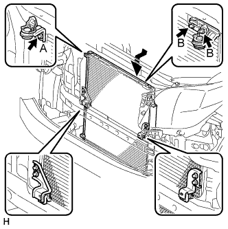

КОНДЕНСАТОР > УСТАНОВКА |
| 1. УСТАНОВИТЕ ОСУШИТЕЛЬ СИСТЕМЫ КОНДИЦИОНИРОВАНИЯ |
С помощью плоскогубцев установите осушитель системы кондиционирования.
|  |
Нанесите достаточное количество компрессорного масла на контактные поверхности нового кольцевого уплотнения и крышки.
Установить кольцевое уплотнение на крышку.
С помощью торцевой шестигранной головки на 14 мм установите крышку на модулятор.
| 2. УСТАНОВИТЕ КОНДЕНСАТОР СИСТЕМЫ КОНДИЦИОНИРОВАНИЯ В СБОРЕ |
|  |
Установите конденсатор системы кондиционирования и закрепите его 3 болтами, как показано на рисунке.
| 3. ПОДСОЕДИНИТЕ ТРУБОПРОВОД ВЫСОКОГО ДАВЛЕНИЯ В СБОРЕ |
Снимите с трубопровода и соединительной детали конденсатора системы кондиционирования виниловую ленту.
Нанесите необходимое количество компрессорного масла на новое кольцевое уплотнение и пригоночную поверхность соединения трубопровода высокого давления.
Установите кольцевое уплотнение на трубопровод высокого давления.
Подсоедините трубопровод высокого давления к конденсатору системы кондиционирования и закрепите его болтом.
| 4. ПОДСОЕДИНИТЕ КРОНШТЕЙН КОНДЕНСАТОРА СИСТЕМЫ КОНДИЦИОНИРОВАНИЯ № 2 |
Вверните 2 болта и установите кронштейн конденсатора системы кондиционирования № 2.
| 5. ПОДСОЕДИНИТЕ КРОНШТЕЙН КОНДЕНСАТОРА СИСТЕМЫ КОНДИЦИОНИРОВАНИЯ № 1 |
Вверните 2 болта и установите кронштейн конденсатора системы кондиционирования № 1.
| 6. УСТАНОВИТЕ ТРУБКУ СИСТЕМЫ КОНДИЦИОНИРОВАНИЯ В СБОРЕ |
Снимите с трубки и соединительной детали конденсатора системы кондиционирования виниловую ленту.
Нанесите необходимое количество компрессорного масла на новое кольцевое уплотнение и пригоночную поверхность трубки системы кондиционирования в сборе.
Установите кольцевое уплотнение на трубку системы кондиционирования в сборе.
Подсоедините трубку системы кондиционирования к конденсатору системы кондиционирования и закрепите ее болтом.
| 7. ЗАПРАВЬТЕ ХЛАДАГЕНТ |
Используя вакуумный насос, выполните вакуумную очистку.
Заправьте хладагент HFC-134a (R134a).
| Код модели | Тип системы кондиционирования | Блок охлаждения | Заправочный объем хладагента |
| Кроме моделей, перечисленных ниже | Для моделей без заднего кондиционера | Для моделей с холодильной камерой | 600 +/-30 г (21,2 +/-1,1 унции) |
| Для моделей без холодильной камеры | 550 +/-30 г (19,3 +/-1,1 унции) | ||
| Для моделей с задним кондиционером | Для моделей с холодильной камерой | 800 +/-30 г (28,2 +/-1,1 унции) | |
| Для моделей без холодильной камеры | 770 +/-30 г (27,2 +/-1,1 унции) | ||
| Для моделей с задним кондиционером Для моделей, предназначенных для эксплуатации в холодном климате | Для моделей без холодильной камеры | 720 +/-30 г (25,3 +/-1,1 унции) | |
| TRJ150L-GKMEKV TRJ150L-GKPEKV TRJ155L-GJPEKV GRJ150L-GKFEKV GRJ150L-GKAEKV KDJ150L-GKFEYV KDJ150L-GKAEYV | Для моделей без заднего кондиционера | Для моделей с холодильной камерой | 600 +/-30 г (21,2 +/-1,1 унции) |
| Для моделей без холодильной камеры | 550 +/-30 г (19,3 +/-1,1 унции) или 600 +/-30 г (21,2 +/- 1,1 унции) *1 | ||
| Для моделей с задним кондиционером | Для моделей с холодильной камерой | 800 +/-30 г (28,2 +/-1,1 унции) | |
| Для моделей без холодильной камеры | 770 +/-30 г (27,2 +/-1,1 унции) |

| 8. УСТАНОВИТЕ РАДИАТОР В СБОРЕ |
Для моделей с 1GR-FE:
Установите радиатор в сборе (Нажмите здесь).
Для моделей с 2TR-FE:
Установите радиатор в сборе (Нажмите здесь).
Для моделей с 1KD-FTV с DPF:
Установите радиатор в сборе (Нажмите здесь).
Для моделей с 1KD-FTV без DPF:
Установите радиатор в сборе (Нажмите здесь).
Для моделей с 5L-E:
Установите радиатор в сборе (Нажмите здесь).
| 9. ДОБАВЬТЕ ОХЛАЖДАЮЩУЮ ЖИДКОСТЬ ДВИГАТЕЛЯ |
Для моделей с 1GR-FE:
Добавьте охлаждающую жидкость двигателя (Нажмите здесь).
Для моделей с 2TR-FE:
Добавьте охлаждающую жидкость двигателя (Нажмите здесь).
Для моделей с 1KD-FTV с DPF:
Добавьте охлаждающую жидкость двигателя (Нажмите здесь).
Для моделей с 1KD-FTV без DPF:
Добавьте охлаждающую жидкость двигателя (Нажмите здесь).
Для моделей с 5L-E:
Добавьте охлаждающую жидкость двигателя (Нажмите здесь).
| 10. ПРОГРЕЙТЕ ДВИГАТЕЛЬ |
После заправки хладагента в течение, по крайней мере, 2 мин. прогрейте двигатель при частоте вращения коленчатого вала 1850 об/мин.
| 11. ПРОВЕРЬТЕ, НЕТ ЛИ УТЕЧЕК ОХЛАЖДАЮЩЕЙ ЖИДКОСТИ |
Для моделей с 1GR-FE:
Проверьте, нет ли утечек охлаждающей жидкости двигателя (Нажмите здесь).
Для моделей с 2TR-FE:
Проверьте, нет ли утечек охлаждающей жидкости двигателя (Нажмите здесь).
Для моделей с 1KD-FTV:
Проверьте, нет ли утечек охлаждающей жидкости двигателя (Нажмите здесь).
Для моделей с 5L-E:
Проверьте, нет ли утечек охлаждающей жидкости двигателя (Нажмите здесь).
| 12. ПРОВЕРЬТЕ, НЕТ ЛИ УТЕЧЕК ГАЗООБРАЗНОГО ХЛАДАГЕНТА |
После заправки газообразного хладагента с помощью галогенного течеискателя проверьте, нет ли утечек хладагента.
Перед проверкой обеспечьте выполнение следующих условий:
 |
С помощью галогенного течеискателя проверьте, нет ли утечки из трубопровода хладагента.
| *1 | Галогенный течеискатель |
| *a | Проверка на наличие утечек |
Если в сливном шланге утечка газа не обнаруживается, снимите блок управления электродвигателем вентилятора (сопротивление вентилятора) с блока охлаждения. Вставьте датчик галогенного течеискателя в блок и выполните испытание.
Отсоедините разъем и подождите примерно 20 мин. Поднесите галогенный течеискатель к контактному датчику давления и выполните испытание.